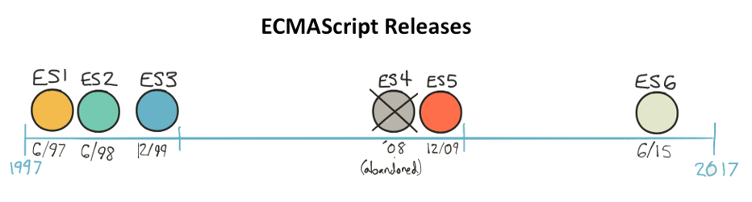
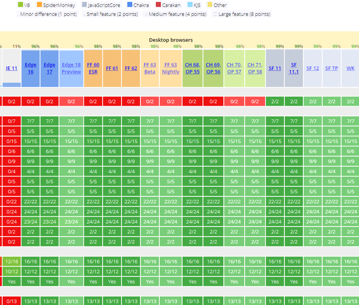
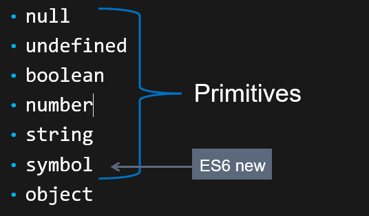
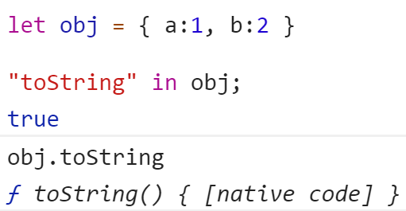
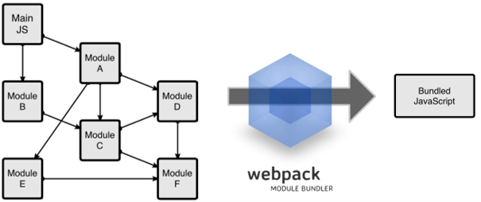
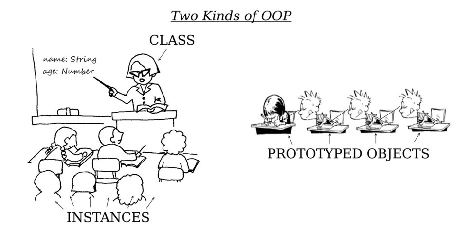
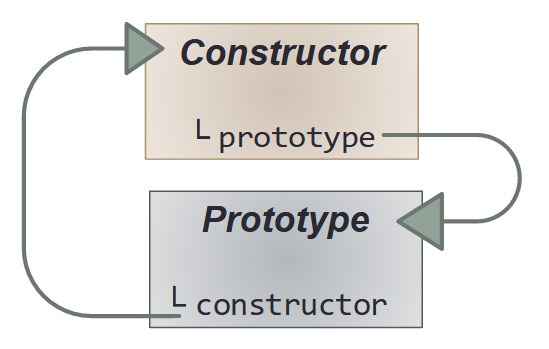
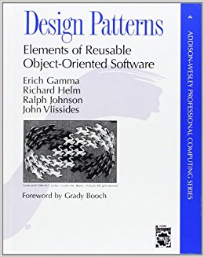

JavaScript Training
- This course is for developers who already have a beginner to intermediate level in JavaScript and who wish to deepen their knowledge of this language to better understand more ambitious JavaScript projects.
- It is classified as advanced, which means that we will focus more on some technical aspects of the language and on the study of some advanced programming patterns.
- The training focuses on the language and is agnostic of any framework or environment, meaning that you will be able to apply these lessons to both front-end (Angular, Vue.js, Ember...) and back-end (Node.js).
- It is the ideal opportunity to review and consolidate the basics for all those who have learned JavaScript "on the job", or to prepare or complement a training on a modern web framework.
Agenda
Cheat Sheets
It can be useful
String Methods
"str".charAt(1) === "str"[1] === "t"
"a".concat("b") === "a" + "b" === "ab"
"str".startsWith("s") === true
"str".endsWith("r") === true
"str".includes("st") === true
"toto".indexOf("t") === 0
"toto".lastIndexOf("t") === 2
"str".search(/t/) === 1
"str1".match(/r(\d)/) => ["r1", "1"]
"Hi Bob".replace(/Hi (\w+)/, "Hello $1") => "Hello Bob"
"string".slice(0,3) === "str"
"1,2,3".split(",") => ["1","2","3"]
"STR".toLowerCase() === "str"
"str".toUpperCase() === "STR"
" str ".trim() == "str"
Array Methods
[1,2].concat([3,4], 5, 6) // [1,2,3,4,5,6]
[1,2,3].fill(4) // [4,4,4]
[1,2,3].includes(2) // true
[1,2,3].indexOf(2) // 1
[1,2,3].join("-") // "1-2-3"
[1,2,3,4].slice(1,3) // [2,3]
[1,2,3,4].every((value, index, arr) => n > 2) // false
[1,2,3,4].some((value, index, arr) => n > 2) // true
[1,2,3,4].find((value, index, arr) => n > 2) // 3
[1,2,3,4].findIndex((value, index, arr) => n > 2) // 2
[1,2,3,4].filter((value, index, arr) => n > 2) // [3,4]
[1,2,3,4].forEach((value, index, arr) => { ... })
[1,2,3,4].map((val, index, arr) => val * 2) // [2,4,6,8]
[1,2,3,4].reduce((accu, n) => accu + n, "test") // "test1234"
[1,2,3,4].reduceRight((accu, n) => accu + n, "test") // "test4321"
// /!\ Mutative methods, original array is modified!
let arr = [3,2,1]
arr.push(4,5) // returns new array.length (5), a = [3,2,1,4,5]
arr.pop() // returns last item (5), a = [3,2,1,4]
arr.unshift(6,5) // returns new array.length (6) ; a = [6,5,3,1,2,4]
arr.shift() // returns first item (6) ; a = [5,3,1,2,4]
arr.splice(1,2,7,8) // at index 1, remove 2 items, insert (7,8) ; [5,7,8,2,4]
arr.sort((a,b) => a-b) // [2,4,5,7,8]
arr.reverse() // [8,7,5,4,2]
Map
let map = new Map([ ['key1', 'val1'], ['key2', 'val2'] ])
let key = {}, value = {} // any type
map.set(key, value)
map.get(key) === value
map.has(key) === true
map.delete(key);
map.size === 2
let keys = [...map.keys()]
let values = [...map.values()]
let fusionMap = new Map([...map1, ...map2])
for(let [key, val] of map){ }
map.forEach((val, key, map) => {})
Set
let mySet = new Set([ 1,2,3,4 ])
▸ Set(4) {1, 2, 3, 4}
mySet.add("any type")
map.has(3) === true
map.delete(3);
map.size === 4;
map.clear(); // remove all
for(let item of mySet){}
mySet.forEach(item => {})
let items = [...mySet];
Introduction
Who manages JavaScript? How is the language evolving?
ECMAScript, TC39 and JavaScript versions
ECMAScript
- ECMA International is an organisation that creates standards for technologies
- ECMAScript is the name of the specification referenced ECMA-262 and describing a general purpose scripting language
- TC39 is the name of the technical committee that decides on developments in the ECMAScript specification. It is composed of delegates from major companies (including all browser providers) and invited experts.
-
JavaScript is a versatile scripting language and the most popular implementation of ECMAScript
(another popular implementation: ActionScript)
JavaScript Evolutions
TC39 is considering proposals for ECMAScript developments. Each proposal goes through 5 stages:
- 0: Strawman - suggestion of a need, call for ideas
- 1: Proposal - draft solution, first polyfills/demos
- 2: Draft - precisely describes the syntax/API
- 3: Candidate - signed by the whole committee, call for implementations
- 4: Finished - ready to be included in the next version of ES
TC39 proposals and meetings are public: github.com/tc39
Versions of ECMAScript
A long delay between initial draft and release implies many browser-specific implementations.
TC39 has decided to move to an annual release schedule from ES6, renamed ES2015
Since 2015, a new version of the ECMAScript specification is released every year: ES2016, ES2017...
ECMAScript browser implementation
As a result of the new annual rhythm:
an excellent, comprehensive and consistent support across all modern browsers
So-called "evergreen" browsers
A reintroduction to JS
Exercises 1 to 6
Exercises
Slides and exercises available on Github: https://github.com/worldline/JS-Training
Do the exercises from your browser at this address: https://codesandbox.io/s/github/worldline/JS-Training
Fork to create your personal version of the working repo. You can publish it on your personal Github account if you have one.
For each exercise, correct the source to validate the associated test
Types and Primitives
JavaScript defines 7 data types:
The typeof operator returns the type of an object, but be careful:
typeof null === "object" // bug of the 1st version of ES
typeof function(){} === "function"
null or undefined
- undefined : the variable is declared but not assigned
- null : the variable has been assigned to the null reference
null represents the intentional absence of value and often comes from an assignment by the developer
Objects
Functions, arrays and derivatives are all of type object. Unlike primitives, objects:
- are compared by reference
"test" === "test"
▸ true
{ item: "test" } === { item: "test" }
▸ true
- have a list of properties that are key-value pairs: key (String, Symbol) ⇔ value (any)
"item" in { item: "test" }
▸ true
Symbol.iterator in [1,2,3]
▸ true
Objects: properties listing
let obj = { a: 1, b: 2 }
"a" in obj
▸ true
for(let key in obj) console.log(key, obj[key])
▸ a 1
▸ b 2
Object.keys(obj)
▸ ["a", "b"]
Object.values(obj)
▸ [1, 2]
Object.entries(obj)
▸ [ ["a", 1], ["b", 2] ]
Objects: properties assignment
let obj = { key: "value" }
obj.a = 1;
obj["b"] = 2;
Object.assign(obj, { c: 3, d: 4}, {d: 5});
▸ {key: "value", a: 1, b: 2, c: 3, d: 5}
Object.fromEntries([ ['a', 1], ['b', 1]]);
▸ {a: 1, b: 2}
Property descriptors
Each property contains in addition to its value, a list of intrinsic parameters called descriptors:
- value: the value of the property
- enumerable: true if the property is returned by Object.keys or for..in
- writable: true if the value of the property can be modified
- configurable: true: if the descriptor can be modified
- get: optional function to use as getter
- set: optional function to use as mutator (setter)
A default assignment is enumerable, modifiable and configurable, without specific accessors or mutators
Define the descriptors
The method Object.defineProperty() allows you to assign a property by specifying its descriptors
const obj = {}
Object.defineProperty(obj, 'a', {
value: 1,
enumerable: true,
writable: false
});
Object.defineProperty(obj, {
b: { enumerable: true, value: 2 },
c: { get: function(){ return 3 } },
});
▸ {a: 1, b: 2}
Getters / Setters
Literal declaration for get / set descriptors:
const user = {
name: "Smith",
first: "John",
get fullName(){
return this.first + " " + this.name.toUpperCase()
},
set fullName(value){
this.first = value.split(" ")[0];
this.name = value.split(" ")[1];
}
}
Own and delegated properties
The properties assigned to an object are called the own properties of the object. But there are other types of properties, the delegated properties.
These delegated properties are in fact the properties of the object's prototype (see Object Oriented section)
obj.toString === Object.prototype.toString
▸ true
Scopes
Scope = perimeter from which variables can be accessed.
At the highest level, we are in the global scope, accessible everywhere.

Accessible from global scope(1) : foo
Accessible from function foo scope (2) : foo, a, b, bar
Accessible from function bar scope (3) : foo, a, b, bar, c
Block scopes
In addition to function scopes, some instructions create so-called block scopes
These are known as block instructions:
if(){ ... }
for(){ ... }
while(){ ... }
A block scope can also be declared with { ... }
(not to be confused with a literal object declaration)
var, let or const?
- let and const appeared with ES2015
- they bind variables to block scope and not function scope like
var, which is much more intuitive - const is no longer used since
Closures
Scope of a function = local scope + parent scope = local variables + non-local variables
A function using non-local variables (defined in a parent scope) creates what is called a closure. A closure must remember its parent scope in order to execute correctly.
add5 retains its parent scope with x=5
This link prevents the garbage collector from dereferencing the local variable x at the end of the add function
add5 creates a closure
function add(x) {
return function(y) {
return x + y;
}
}
var add5 = add(5);
add5(8)
▸ 13
Using closures to make "private" variables
function getCounter() {
let value = 0;
return {
getValue(){ return value },
increment() { value += 1 }
}
}
Outside the scope of the getCounter function, the value variable will never be accessible.
Only the getValue and increment closures allow access
Using closures
for (var i = 1; i<=3; i++) {
setTimeOut( function timer(){
console.log( i );
}, i*1000 );
}
▸ 4
▸ 4
▸ 4
Functions and execution context
Functions have some kind of hidden argument called context and assigned to the keyword this inside the function body.
When a function is called as a property of an object, we call it a method and that parent object is assigned as execution context of the method:
const obj = {
whoisthis(){ return this }
}
obj.whoisthis() === obj
▸ true
When a function is called by direct reference, it has no context, which means the this variable will be looked up in parent scope.
At the root scope, the context is defined as the global context (Window on browser)
Functions and execution context
The execution context can be changed with the methods call, apply and bind
function greet(a, b) {
return `Hi I'm ${this.name} ! ${a} + ${b} equals ${a+b} !`
}
let alice = { name: "Alice" },
bob = { name: "Bob" };
greet.call(alice, 1, 2)
▸ "Hi I'm Alice ! 1 + 2 equals 3 !"
greet.apply(bob, [2, 3])
▸ "Hi I'm Bob ! 2 + 3 equals 5 !"
let greetBob = greet.bind(bob, 1, 5)
greetBob()
▸ "Hi I'm Bob ! 1 + 5 equals 6 !"
These methods are available on all functions.
Primitives wrappers
String(), Number(), Boolean() are the object equivalent constructors of the corresponding primitives, also called primitive wrappers
The switch between object and primitive is automatic:
Primitive -> Object
let str = "abc";
str.length; // 3
str.toUpperCase(); // "ABC"
Object -> Primitive
let Str = new String( "abc" ),
str = Str.valueOf() // ou "" + Str
let N = new Number( 42 ),
n = N.valueOf() // +N
console.log(Str, typeof Str) // "abc", "object"
console.log(str, typeof str) // "abc", "string"
console.log(N, typeof N) // 42, "object"
console.log(n, typeof n) // 42, "number"
Type conversions (cast)
There are 3 types of automatic type conversions in JS:
| Explicit cast | Implicit cast | Cast operators | |
|---|---|---|---|
| ToString | |
|
|
| ToNumber | |
|
|
| ToBoolean | |
|
|
== or === ?
== weak equality (with conversion)
=== strict equality (without conversion)
It's recommended to use strict equality, which is more predictable.
Implicit casts
Logical operators
Operands are converted to Booleans to evaluate the operator, but the original values are returned
let a = 42,
b = "abc",
c = null;
a || b; // 42
a && b; // "abc"
c || b; // "abc"
c && b; // null
If the implicit Boolean cast of a value is true, the value is said to be truthy, otherwise falsey
Logical operators
The operators || and &&,
the ternary conditions ?: and
if else statements execute only one operand here:
if(0) log('A'); else log('B');B
undefined ? log('C') : log('D');D
true && log('E'); false && log('F');E
true log('G'); false || log('H');H
The && operator has priority over || which has priority over ?:
Upgrade to modern JS: ES2015+
Exercises 7 to 11
Syntactic sugar: key and value
let foo = "foo", bar = "bar"
const obj = { foo, bar } // equivalent to { foo: foo, bar: bar }
obj
▸ {foo: "foo", bar: "bar"}
Syntactic sugar: calculated keys
let foo = "foo", bar = "bar"
const obj = {
[foo]: [bar],
[foo+bar]: foo+bar
}
/* equivalent to
obj[foo] = [bar]
obj[foo+bar] = foo + bar
*/
obj
▾ {foo: Array(1), foobar: "foobar"}
▸ foo: ["bar"]
foobar: "foobar"
Arrow functions
const f1 = () => {},
f2 = x => x*2,
f3 = (a,b,c) => { return a+b+c }
Functions declared with this shortened syntax have specific features:
- No execution context
(the value of this is looked up in the parent scope) - Cannot be invoked as builders
Short and effective, they encourage a functional, no-frills style (no closure).
Default parameters
Assigns a default value if argument === undefined
function f(a, b=1, c=2) { return a + b + c }
f(1, 2, 3)
▸ 6
f(1, null, null)
▸ 1
f(1, undefined, undefined)
▸ 4
f(1)
▸ 4
Also works with the arrow functions:
const doSomething = (params = {}) => {}Operators Spread / Rest
Spread: converts an iterable object into an argument list
const sum = (a,b,c) => a+b+c;
sum(...[1,2,3])
▸ 6
sum(1, ...[2,3])
▸ 6
[1, ...[2,3], 4]
▸ (4) [1,2,3,4]
const cloneArray = arr => [...arr]Operators Spread / Rest
Rest : converts a list of arguments into an Array
const sum = (...args) => args.reduce((a,b) => a+b, 0);
sum(1,2,3,4)
▸ 10
function addToList(list, ...args) { // rest
list.push(...args) // spread
}
Operators Spread / Rest
Object properties (ES2018)
Only works with enumerable properties
- Rest properties:
let { x, y, ...z } = { x: 1, y: 2, a: 3, b: 4 };
x; // 1
y; // 2
z; // { a: 3, b: 4 }
- Spread properties:
let n = { x, y, ...z };
n; // { x: 1, y: 2, a: 3, b: 4}
Destructuring
Assigns variables according to an object / Array structure
const userData = { first: "Joe", name: "Dalton", age: 27 };
const { first, age, name: userName } = userData;
// first = "Joe", age = 27, userName = "Dalton"
const myObject = {
foo: {
bar: 42
}
}
const { foo: { bar: magicNumber } } == myObject
// magicNumber = 42
const [first, second, fourth] = [1,2,3,4];
// first = 1, second = 2, fourth = 4
Destructuring
Also works with function parameters:
function doSomething({ config, options: { verbose } }){
if(verbose) console.log("blabla");
doSomethingElse(config);
}
doSomething({
config: { ... },
options: { verbose: true }
})
Default parameters
- Can be expressions using other arguments or variables in the scope.
- If the default value is an expression, it will only be executed if necessary
function doSomething(data, config = retrieveDefaultConfig(data)) {
}
const required = name => throw new Error(`Missing required paramter ${name}`)
const findUsersByRole = ({
role = required('role'),
maxResults = 100
}) => { }
Parameterized object argument pattern
Instead of passing several arguments to functions, a popular pattern is to pass an object as single argument with the different parameters as properties:
const searchProducts = ({
minPrice = 0,
maxPrice = 1000,
inStock = true
}) => {
(...)
return { results, size, lowestPrice }
}
const { results, size } = searchProducts({ maxPrice: 500 });
Receiving and returning a single object is very useful:
- no need to remember the order of the arguments
- each parameter can be optional
- we limit the quantity of variables to be passed from one point to another
- allows you to return several variables
Template strings
Template Strings are a new literal String declaration introduced in ES2015.
It uses the backtick ` ` character.
This new literal declaration allows:
- interpolation of variables and expressions
- line breaks
Tagged Template strings
If a function reference precedes a template string literal, that function is invoked with the static and dynamic parts of the following string:
function insertInUpperCase(string, ...vars) {
console.log({ strings, vars });
return strings.reduce(
(out, str, i) => `${out}${str}={vars[i] || "").toUpperCase()}`
)
}
Map & Set
Map: collection of keys/values like objects, but the keys can be of any typeSet: collection of values without keys, not ordered but with guarantee of uniqueness
s = new Set([1,2,3,2,4])
▸ Set(4) {1,2,3,4}
s.add(5);
s.delete(3);
▸ Set(4) {1,2,4,5}
s.has(4)
▸ true
m = new Map([
["key", "value"], [ s, s.size ]
])
▸ Map(2) { "key" => "value", Set(4) => 4}
m.get(s)
▸ 4
m.set([1,2,3], [4,5,6])
m.delete("key")
▸ Map(2) {Set(4) => 4, Array(3) => Array(3)}
Modules (a.k.a. ES Modules or ESM in short)
The long awaited standard solution for managing modular code (divided into several separate files)
Replaces and supersedes:
-
CommonJS (used by Node.js)
const $ = require('jquery') -
Asynchronous Module Definition (AMD)
define(['jquery', 'underscore'], function($,_){ }); -
Universal Module Definition (UMD)
Pattern combining CommonJS, AMD and using global variables to be sure to be understood by all module systems - the use of global variables and the <script> to be ordered
Modules
Two keywords: import and export
A distinction is made between named imports and default imports
import MonModule from './mon-module.js'
import { a, b as two } from 'module'
import React, { Component } from 'react'
export const a = 42
export function b(){ ... }
export default { Component, View }
Modules
Modules have a different execution context to traditional scripts:
-
strict mode used by default ("use strict";)
- explicit exceptions on certain silent errors
- new keywords are reserved as variable names
- forbids variables not explicitly declared
- no global context (this === undefined in the global scope)
The code must therefore be parsed differently if it is a module:
- On browser:
<script type="module" src="index.js"></script> - On Node.js: use .mjs extension instead of .js, or have { type: "module" } in package.json
Modules
https://hacks.mozilla.org/2018/03/es-modules-a-cartoon-deep-dive/
Modules: dynamic import
When import is called as a function, the module is imported asynchronously.
This is very useful for downloading code on demand and optimising the loading time of your applications.
Modules: what about support?
Good support (~95%) in 2022: Chrome 61+, Edge 16+, Firefox 60+
But developers use ESM widely in their codebases that are converted to AMD-like bundles by bundlers like Webpack, Parcel, Rollup, esbuild...
Bundlers are tools that precompile your code and reduce the browser's work by producing optimized JS bundles from a set of modules during a build step.
Modules: script nomodule
Browsers that do not support modules won't load <script type="module">
but they can load an alternative script with the nomodule attribute.
Bundlers can take advantage of this attribute to produce two bundles:
a modern bundle, and a legacy bundle with more transpiled code.
The modern bundle will be lighter and more efficient, so that support for older browsers does not degrade performance for the modern browsers used by the majority of users.
Modules : recommandations
Always use ESM modules and avoid other existing module systems
Using a bundler with the "Modern build" option
- Parcel: for simplicity and speed of implementation
- Webpack: for complex web applications with advanced needs
- Rollup: for JS libraries
Deal with Asynchrony
Exercises 12 to 14
What is Asynchronism ?
JavaScript is executed in an mono-thread environment (the engine only runs one instruction at a time).
Some instructions may take some time (I/O, network requests…) and must not block the execution of the rest of the program.
So we make them asynchronous: they declare a function call to be carried out later, after a defined or undefined period.
These future function calls are stored in stacks, and the engine decides when to pop the calls.
setTimeout(function calledAfter5Seconds(){
console.log("bye !")
}, 5 * 1000)
console.log("hello !")
Callbacks
The most common interface for asynchronous instructions is the callback function.
It consists of passing as parameter of an asynchronous function another function (the callback) which will be called later.
let callback = function(result){ console.log(result) }
setTimeout(callback, 1000);
element.addEventListener('click', callback);
Publisher/Subscriber
This asynchronous communication pattern is based on a principle of subscription to a flow of events.
element.addEventListener is an example of pub/sub.
A pub/sub keeps in memory a list of callbacks (the subscribers).
It is composed of at least two functions: subscription and emission
Example of a pub/sub API:
const publisher = new PubSub();
publisher.on("alert", function onAlert(eventData){
console.log(eventData)
})
publisher.emit("alert", "something happened")
Drawbacks of callbacks
Callbacks show their limits when a series of asynchronous operations must be chained (executed one after the other).
An exception raised by a callback cannot be catched directly from the parent scope, which is why error handling is often handled with a second argument of the callback function or a second callback function dedicated to error handling.
Promises
- Promises are objects used to facilitate the coordination of asynchronous operations.
- A Promise represents the promise of a return value in the future. The delay is not necessarily predictable, this value can be available almost immediately or never arrive.
- A Promise is always in one of these 3 states:
- pending: initial state, waiting
- fulfilled: the promise has been resolved, the operation was successful
- rejected: the promise was rejected due to an error
Callbacks vs Promises
doSomething(function(result){
doAnotherThing(result, function(newResult){
doFinalThing(newResult, function(finalResult){
console.log("Final result: ", finalResult)
}, failureCallback)
}, failureCallback)
}, failureCallback)
doSomething()
.then(function(result){
return doAnotherThing(result)
})
.then(function(newResult){
return doFinalThing(newResult)
})
.then(function(finalResult){
console.log("Final result", finalResult)
})
.catch(failureCallback)
Creation of a promise
// creating a promise from a callback-based API
const promise = new Promise((resolve, reject) => {
const callback = (err, result) => err ? reject(err) : resolve(result)
doSomethingAsynchronous(callback)
})
promise.then(result => {
console.log(`Promise resolved with ${result}`)
})
promise.catch(error => {
console.log(`Promise rejected with ${error}`)
})
promise.finally(() => { // ES2018
console.log(`Called after either resolve or reject of the promise`)
})
Other methods of creation of Promises
Promise.resolve(val)Promise.reject(err)create a promise immediately resolved/rejected with some value
Promise.all([ promise1, promise2, promise3 ])create a promise resolved when all the promises passed as arguments are resolved
-
Promise.race([ promise1, promise2, promise3 ])create a promise resolved when one of the promises passed as arguments is resolved
Chaining and parallelism
const wait = promisify(setTimeout)
Promise.race([
fetch('/api/notifs').then(res => res.json()),
wait(10000)
]).then(([notifs]) => {
if(notifs){ /* do something */ }
})
Promise.all([
wait(1000),
Promise.resolve(data),
wait(2000)
])
Promise.race([
cache ? Promise.resolve(cache) : Promise.race([]),
fetch('/api/data').then(res => res.json())
])
Exception management
f1()
.then(f2)
.catch(error => {
// handle the exceptions from f1 or f2
})
.then(f3)
.catch(error => {
// handle the exceptions coming exclusively from f3
})
then() and catch() can be chained in any order. It allows intermediate error handling in a promise chain.
async / await (ES2017)
Functions prefixed with the async operator can contain instructions prefixed with await.
await pauses the function execution waiting for the following promise to be resolved.
async function myFunction() {
try {
const result = await myPromise;
// my Promise is resolved and the the resolved value is assigned to result
} catch(err) {
// myPromise is rejected with error "err"
}
// this line is reached only after resolve/reject of myPromise
return 42
}async / await: pros and cons
Combines the advantage of asynchronism with the convenience of writing and reading synchronous code
Allows to unify the management of synchronous errors (exceptions) with the cases of rejection of promises
Does not encourage the developer to parallelize asynchronous operations, which can slow down the application
Observable
A pattern halfway between Promise and Pub/Sub:
- Promise that can be resolved in several stages
- Event emitter with a completion concept
A proposal exist to standardize Observables, but it's still Stage 0 and has not been presented to TC39 yet. However, it's easily implementable by yourself like Pub/Sub.
This is one of the foundations of ReactiveX and reactive programming.
Observable: example of API (from RxJS)
const keyboardObservable = new Observable( subscriber => {
const onKey = event => {
if(event.key === "Enter") {
subscriber.complete();
document.removeEventListener("keyup", onKey)
}
else subscriber.next(event.key)
}
document.addEventListener("keyup", onKey)
});
const keys = [];
const keyboardSubscription = keyboardObservable.subscribe({
next(key){
if (key === "Escape") keyboardSubscription.unsubscribe();
else keys.push(key)
},
complete(){ alert(keys.join("")) }
});
Tasks, microtasks and event loop
The event loop is the mechanism that periodically pops the asynchronous calls.
Between each iteration of the loop, the browser re-renders the page and processes user events (click, scroll, etc.)
Modern JS engines store asynchronous calls in two stacks:
- tasks, unstacked at the end of each event loop (examples:
setTimeout,setInterval,fetch) - microtasks, unstacked at the end of each task (examples:
promise.then,process.nextTick)
Work with the event loop
Sometimes, you need to wait for the event loop:
- to wait for the DOM to be updated before the next instruction
- to not block the thread when doing a heavy calculation
You then need to create a new task for your callback:
setTimeout(callback, delai)with zero delay to minimize waiting time-
requestAnimationFrame(callback)let the browser optimize when a callback is called to get a fluid animation (~ 60 frames per second) -
requestIdleCallback(callback)let the browser optimize when to call the callback when the CPU is not heavily loaded (non standard)
Work with the event loop
setTimeout(() => console.log(1), 0)
Promise.resolve().then(() => console.log(2))
requestAnimationFrame(() => console.log(3))
requestIdleCallback(() => console.log(4))
console.log(5)
In what order are the logs displayed ?
5 - 2 - 1 - 4 - 3 variable depending on the CPU activity, but it's the most likely order
Object-oriented Programming
Exercises 15 to 19
General principles of Object Oriented Programming
- Represent a problem with elements that can be associated with material objects or concepts
- Bring more proximity between code logic and business logic
- Manipulate objects that contain their own internal state and their own logic
Objectives:
- have a more intuitive, self-describing code
- facilitate work in parallel
- facilitate the transition from specification to code
Objects and Prototypes
- Any object has an internal private property called the prototype
- Any object can be the prototype of one or many other objects
- You can retrieve the prototype of an object with:
Object.getPrototypeOf(obj) - You can reassign dynamically the prototype of an object with:
Object.setPrototypeOf(obj, newProto)
Why "prototype" ?
- In industry, a prototype is a real physical object, on which mass-produced objects will be based.
- On the same analogy, a class would be more like a plan or diagram to follow, of a more abstract nature and which cannot be manipulated like an object.
- A prototype is taken as an example to create the produced objects, while a produced object can be taken as an example for the implementation of a class.
The choice of this term serves to illustrate these differences.
Delegation to prototype
If for object.prop, the property prop is not found in object, then it
is searched for in the prototype of object, then in the prototype of the prototype of object, and so on...
This is called prototype delegation, and objects have a prototype chain.
The "root" prototype is Object.prototype. Its own prototype is null.
Object.getPrototypeOf([1,2,3]) === Array.prototype
▸ true
Object.getPrototypeOf(Array.prototype) === Object.prototype
▸ true
Object.getPrototypeOf(Object.prototype)
▸ null
Methods related to the prototype
Object.getPrototypeOf(obj)
Object.setPrototypeOf(obj, newProto)
let obj = Object.create(proto)
Object.getOwnPropertyNames(obj)
Object.getOwnPropertySymbols(obj)
Object.getOwnPropertyDescriptors(obj)
Object constructor
obj.hasOwnProperty("prop")
obj.isPrototypeOf(anotherObj)
Object.prototypeBeware of misuse of language !
There are no classes in JavaScript, but the word is misused to refer to a prototype and its associated constructor.
Unlike classes, there is no difference in nature between a prototype and an object. A prototype can therefore be manipulated like any other object: assigned by reference, passed as a parameter, exported as a module...
Beware of misuse of language !
An object does not inherit the properties of its prototype, but it delegates them to it: these are not its own properties
const bob = Object.create({ name: "Anonymous" })
bob.name = "Bob";
console.log(bob.name)
▸ "Bob"
delete bob.name;
console.log(bob.name)
▸ "Anonymous"
In the context of OOP with prototypes, delegating can mean:
- retrieve default values
- get a generic implementation of a method
- implement basic behaviors (toString, cast to primitive, etc.)
Beware of misuse of language !
Most of the class-based OOP vocabulary needs to be avoided:
- The prototype is neither an interface nor a contract to fulfill for the object, but an API base on which to rely.
- We do not override properties, but we delegate those that are missing
- The word "instance" makes sense for an instance of a class because it can mean "example". With prototypes, the roles are reversed since it is the prototype that fits better the role of example.
It is quite the same historical aberration that brought us the name "Java"Script.
Constructors and operator new
In JavaScript, a function can be called as a constructor with the operator new
function Constructor(){
// init an object
}
Constructor() // called as regular function
new Constructor() // called as constructor
Prototypes and constructors
When new Constructor() is invoked, a new object is created with Constructor.prototype as prototype.
This is equivalent to call Object.create(Constructor.prototype)
The same principle applies on all native constructors in the language:
let today = new Date();
today.getMonth === Date.prototype.getMonth
let obj = {} // or new Object()
obj.toString === Object.prototype.toString
let array = [1,2,3] // or new Array(1,2,3)
array.concat === Array.prototype.concat
The instanceof operators determines if an object has been created by the following constructor:
x instanceof C ⇔ Object.getPrototypeOf(x) === C.prototype
[] instanceof Array ⇔ Object.getPrototypeOf([]) === Array.prototype
Constructors and context
The new operator changes the way a function is invoked in several ways:
function hello(){
console.log(`this === ${this}`)
}
let result1 = hello() // this === [object Window]
let result2 = new hello() // this === [object Object]
The created object is used as execution context of the constructor (this)
new Constructor(…args) ≈
Constructor.call(Object.create(Constructor.prototype), ...args)
This object is also returned by default by the function, when there is no return instruction.
console.log(typeof result1) // undefined
console.log(typeof result2) // object
Constructor.prototype
Every constructor function has a prototype property that is an object with a constructor property referring to the constructor function.
That's how you can retrieve the constructor from a constructed object.

function Car() { }
Car.prototype;
▸ { constructor: f }
Car.prototype.constructor === Car
▸ true
In the prototype, we can declare other properties that will be delegated by the objects created with this constructor:
Car.prototype.nbWheels = 4;
const twingo = new Car();
twingo.nbWheels
▸ 4
Constructor.prototype
Constructor.prototype≠Object.getPrototypeOf(Constructor)
function Car(){} ⇔ const Car = new Function()
Object.getPrototypeOf(Car) === Function.prototype
Constructors flaws
Constructors are a commonly used pattern in JS, but they have several flaws:
- The prototype constructors are not automatically invoked, you have to do it manually.
- The prototype constructor may not have the same signature, which breaks the principle of substitution.
- A
constructorproperty is assigned to created objects, which can break existing code if you use this property for other effects, for example:car.constructor = "Toyota" thiskeyword does not work the same depending on whether the function is called with operatornewor not- It is not possible to declare several constructors
- They are confusing for beginners with prototypes
The class operator (ES2015)
Syntaxic sugar for declaring a prototype with a constructor
class Person {
constructor(firstname, lastname) {
this.firstname = firstname
this.lastname = lastname
}
sayMyName(){
return `${this.firstname} ${this.lastname}`
}
}
class User extends Person {
constructor(firstname, lastname, role){
super(firstname, lastname);
this.role = role;
}
get isAdmin(){
return this.role === "admin"
}
}
const bill = new User("Bill", "Gates", "admin")
constructor propertysuper
super(...args); // call the prototype constructor
super.method(); // call a method of the prototype
It is usable without the class operator:
const user = {
name: "Anonymous",
getName(){ return this.name }
}
const joe = {
name: "Joe",
getName(){
return `joe name: ${this.name} ; user name: ${super.name} : user getName: ${super.getName()}`
}
}
Object.setPrototypeOf(joe, user)
joe.getName()
▸ joe name: Joe ; user name: Anonymous ; user getName: Joe
static
Defines a static property: a property of the constructor itself, not the prototype
class C {
method(){ console.log("method") }
static methodStatic(){ console.log("static method") }
}
(new C()).method() // method in C.prototype
C.methodStatic() // methodStatic in C
This is basically the same thing than directly assigning the property to the constructor, so not the most useful syntaxic sugar, but it was added for its familiarity for Java developers.
C.equivalentStatic = function(){ ... }
Constructors flaws, with operator class
- The prototype constructors are not automatically invoked, you have to do it manually.
still the case but simplified with
super() - The prototype constructor may not have the same signature, which breaks the principle of substitution.
still the case
- A
constructorproperty is assigned to constructed objects, which can break existing code if you use this property for other effects, for example:car.constructor = "Toyota"still the case but the assignation is explicit to prevent conflicts thiskeyword does not work the same depending on whether the function is called with operatornewor notan exception is raised if constructor is not called withnew- It is not possible to declare several constructors
still the case
- They are confusing for beginners with prototypes
adds even more confusion with class-based OOP
Alternative to constructors
You don't need constructors to make prototype-based OOP. You can rather use:
- Factory functions
function createUser({ first, name }){ const user = Object.create(userProto) user.first = first user.name = name return user } Object.createandObject.assignconst john = Object.assign(Object.create(userProto), { first: "John", name: "Smith" })
It fixes all the flaws previously stated, and you don't need these anymore:
new, instanceof, class, super, static
class vs Object.create: an example
class Foo {
constructor(who){
this.me = who
}
identify(){
return `I am ${this.me}`
}
}
class Bar extends Foo {
speak(){
return `Hello, ${this.identify()}`
}
}
let b1 = new Bar("b1")
let b2 = new Bar("b2")
b1.speak();
b2.speak();
const Foo = {
init(who){
this.me = who
return this
},
identify(){
return `I am ${this.me}`
}
}
const Bar = Object.create(Foo)
Bar.speak = function(){
return `Hello, ${this.identify()}`
}
let b1 = Object.create(Bar).init("b1");
let b2 = Object.create(Bar).init("b2");
b1.speak();
b2.speak();
Delegation pattern, in short
- Lighter and simpler model
- Replace the notion of constructors by factory functions or initialization methods
- No longer needs
newandinstanceofoperators - Requires to get out of the mental model of class hierarchies
Use Object.create and class extends with moderation
Limit the size of your prototype chains as much as possible
Delegation is a powerful and flexible pattern, but other approachs such as object composition are underused.
Object composition (a.k.a. Mixins)
Another pattern in JavaScript OOP consists of creating objects by composition.
This pattern is super simple because JS objects support dynamic assignation of new properties:
const mixin = { ...objA, ...objB }
// or
const mixin = Object.assign({}, objA, objB)
The composition is ordered, applying arguments from left to right, so that in case of conflicts on one property name, the last one gets priority:
let o = { ...{ x: 1 }, ...{ x: 2 }, ...{ x: 3 } }
o
▸ { x: 3 }
Composition or delegation ?
Favor object composition over class inheritance
(Gang of Four 1995:20)
In reality, there is no pattern always better than another:
they match with different ways of thinking.
The flaws of each pattern became clear when you start to excessively use it anywhere.
Take the time to think about your model, do not code by habit.
Exercise: Relations between objects
Let's practice on a project example: a web components library
Objects identified in the model:
ComponentClickableFocusableEditableButtonInputTextInput
Objectives
- think about the model, find the right relations between objects:
Delegation ? Composition ? Encapsulation ? - implement the relations between objects
- test the example using components Button and TextInput
Symbol
New primitive type since ES2015
Represents a unique reference:
const symbol = Symbol();
const symbolFoo = Symbol('foo');
typeof symbol;
▸ "symbol"
symbolFoo.toString()
▸ "Symbol(foo)"
symbolFoo === Symbol('foo')
▸ false
Symbols can be used as property keys of an object:
const obj = { [symbolFoo]: "bar" };
Object.getOwnPropertySymbols(obj)
▸ [Symbol(foo)]
Symbols - Global register
A global register exists for symbols nevertheless:
const symbolFoo = Symbol.for('foo')
symbolFoo === Symbol.for('foo')
▸ true
Symbol.keyFor(symbolFoo)
▸ "foo"
Symbols - Known symbols
Some symbols are built-in in ES2015.
They let you redefine some internal behaviors of the language for an object:
const obj = {
[Symbol.toPrimitive](){ return 42 }
}
+obj;
▸ 42
Examples:
Symbol.iterator: used when iterating (for loops, spread operator...)Symbol.hasInstance: used byinstanceofoperatorSymbol.toPrimitive: used to cast in primitiveSymbol.toStringTag: used bytoStringmethod
Iterable objects
Array, Set and Map are built-in iterable structures that do the job most of the cases.
But you can also create your own iterable objects for specific needs:
binary trees, linked lists, graphs...
An object is said iterable when its Symbol.iterator method returns an iterator.
An iterator is an object with a method next() that returns an object with 2 properties:
done: boolean, true if the iteration is finishedvalue: current value of iteration, undefined ifdoneis true
const compteur123 = {
[Symbol.iterator]: function(){
let nombres = [1, 2, 3]
return {
next(){
return {
done: nombres.length === 0,
value: nombres.shift()
}
}
}
}
}
for(let n of compteur123) console.log(n);
▸ 1
▸ 2
▸ 3
[...compteur123]
▸ [1, 2, 3]
function* and generators
A generator is a special type of function used to simplify the creation of iterators. A generator is declared with operator function*, which allow the use of the yield operator inside.
const compteur123 = {
[Symbol.iterator]: function*(){
let nombres = [1, 2, 3];
while(nombres.length) yield nombres.shift();
}
}
[...compteur123]
▸ [1, 2, 3]
yield let you pause the execution of the generator function and returns an intermediate result. The execution will resume on next() call.
Iteration is finished at the end of function instructions, or when meeting a return instruction.
Proxy
Proxies, introduced in ES2015, let you intercept and customize the operations made on objects:
- enumerate and describe its properties
- define, assign, or delete some properties
- invoke it as function or constructor
- get or set its prototype
- ...
A Proxy does not change the original object, it returns a new object reference, and all the operations shall be done on this new reference.
By default, no operation is intercepted nor modified so the proxy object is indistinguishable from the original object.
const obj = { foo: "bar" }
const proxy = new Proxy(obj, {
get(obj, prop){
console.log(`get ${prop} intercepted`)
return "intercepted!"
}
})
proxy.foo;
▸ get foo intercepted!
obj.foo;
▸ barProxy traps
new Proxy(object, {
get(o, key){}, // read property value
set(o, key, val){}, // write a new value for property
deleteProperty(o, key){},
apply(o, context, args){}, // invoke as function
construct(o, args){}, // invoke as constructor
ownKeys(o){}, // enumerate own properties
has(o, key){}, // query if property exists
defineProperty(o, key, desc){},
getOwnPropertyDescriptor(o, key){},
getPrototypeOf(o){}
setPrototypeOf(o, proto){}
})
Reflect API
Reflect represents the capacity for reflection acquired by JS with the introduction of proxies.
The Reflect object contains a set of methods that reproduce the default behavior of the language for all the Proxy traps. You can see it as the default value of every Proxy trap.
Reflect.get(o, key) ⇔ o[key]
Reflect.set(o, key, val) ⇔ o[key] = val
Reflect.has(o, key) ⇔ key in o
Reflect.apply(o, context, args) ⇔ o.apply(context, args)
...
You can easily break existing behaviors you didn't even know existed when playing with proxies. A good practice and safety measure is to always call the Reflect API when adding a proxy trap.
new Proxy(obj, {
set(o, key, value){
if(typeof value !== "string"){
throw "Only strings are accepted as values for this object"
}
return Reflect.set(o, key, value) // back to the default behavior
}
})
Use cases for Proxies
- Defensive objects: prevent object mutations, throw exceptions when trying to read an undefined property...
- Watchers: publisher/subscriber event system on object mutations (Vue.js, MobX)
- Strong type-checking: validate types or values assigned to objects (objectmodel.js.org)
- Hiding private properties
- Function memoization for performance imrpovements
- Debugging, performance measurement
- ...
Functional programming
Exercices 20 to 22
General principles of Functional Programming
- Decompose a problem into atomic, generic and composable functions
- Favor pure functions, i.e. not using non-local variables and having no side effects
- Avoid object mutations
Objectives:
- have a more predictable code
- reduce developer mental load
- reduce the number of bugs
- eliminate dead code more easily
Function patterns: Recursivity
A recursive function invokes itself with other arguments until reaching a stop condition.
const factorial = n => n > 2 ? 1 : n * factorial(n-1)
const flatten = ([x, ...xs]) => x === undefined
? []
: [ ...(Array.isArray(x) ? flatten(x) : x), ...flatten(xs) ]
A useful pattern but not the most readable and with the risk of an infinite loop.
Recommended: use it only for minimalist functions, and explicit the recursivity with code comments
Chainable API
A chainable method returns its own execution context (return this) or an object of the same type/prototype in order to be able to chain the calls to this method.
Example: Array.prototype chainable methods
[1, 2, 3, 4]
.concat(5, 6, 7, 8)
.map(n => n**2 + 1)
.filter(isPrime)
.slice(0, 5)
.join(", ") + " are prime numbers"
▸ "2, 5, 17, 37 are prime numbers"
Chainable API are convenient to use because they reduce sequences of instructions to a single expression. They made the success of famous JS libraries like jQuery or lodash.
Function composition
Function composition consists of creating a composed function that sequentially calls several other functions, each with the return value of the previous one:
compose(f,g,h)(x) ⇔ h(g(f(x)))
Function composition can be a relevant solution when:
- a function is too long or takes too many parameters
- a variable is only used once for an intermediate calculation
- the developer is tempted to copy-paste some code
Compared to chainable API, function composition favors independent functions over methods, which avoids overloading objects with too many properties.
Currying
From Haskell Curry, a mathematician who laid the foundations of functional programming.
Currying means transforming a function that takes N arguments into a function taking the 1st argument only and returning another function taking the 2nd argument only, and so on until having collected the N arguments necessary to compute and return the final result:
f(a,b,c) ⇔ curry(f)(a)(b)(c)
Arrow functions make it easy to transform functions into curryied ones:
const sum = (a,b,c) => a + b + c
const sum = a => b => c => a + b + c // curryied version
A more flexible definition allows passing any number of arguments at each step:
curry(f)(a,b)(c) ⇔ curry(f)(a)(b,c) ⇔ curry(f)(a)(b)(c)
Currying: use cases
Currying is used to apply part of the arguments to decline a generic function into a more specialized version of it: this is called partial application.
const sum = a => b => a + b
const increment = sum(1);
increment(42)
▸ 43
const replace = curry((before, after, str) => str.replace(before, after))
const replaceSpacesBy = replace(/\s/g);
const trim = replaceSpacesBy("")
trim(" Hello ! ")
▸ "Hello!"
In practice, we often introduce currying in a codebase the opposite way:
starting from a function doing some specific work, we rewrite it into a more generic version, then use partial application to get back to the original specific use case.
Partial application with fn.bind
Partial application can also be done with the bind function in Function.prototype:
const where = (field, condition, array) => array.filter(
row => condition(row[field])
)
const whereAgeIs = where.bind(null, "age")
whereAgeIs(n => n > 10, data)
const whereAgeIsOver18 = where.bind(null, "age", n => n > 18)
whereAgeIsOver18(data)Functional refactoring in practice
How to refactor a code to obtain pure, atomic, generic and composable functions ?
Let's start from this code example:
import data from "users.json"
let results = [];
function printUsersOverAge18(){
data.sort((a,b) => a.lastName < b.lastName ? -1 : 1)
results = data.filter(user => user.age >= 18).slice(0, 5)
const output = results.map(user => user.firstName).join("\n")
document.querySelector("#results").textContent = output
}
Functional refactoring in practice
Pass non-local variables as function arguments. If they are reassigned, make them return values.
import data from "users.json"
let results = [];
function printUsersOverAge18(){
data.sort((a,b) => a.lastName < b.lastName ? -1 : 1)
results = data.filter(user => user.age >= 18).slice(0, 5)
const output = results.map(user => user.firstName).join("\n")
document.querySelector("#results").textContent = output
}
Functional refactoring in practice
Replace mutations with equivalent immutable instructions when possible. Otherwise, try to isolate them.
import data from "users.json"
function printUsersOverAge18(data){
data.sort((a,b) => a.lastName < b.lastName ? -1 : 1)
const results = data.filter(user => user.age >= 18).slice(0, 5)
const output = results.map(user => user.firstName).join("\n")
document.querySelector("#results").textContent = output
return results
}
const results = printUsersOverAge18(data)
Functional refactoring in practice
import data from "users.json"
function getUsersOverAge18(data){
const sortedData = [...data].sort((a,b) => a.lastName < b.lastName ? -1 : 1)
const results = sortedData.filter(user => user.age >= 18).slice(0, 5)
const output = results.map(user => user.firstName).join("\n")
return { results, output }
}
const { results, output } = getUsersOverAge18(data)
document.querySelector("#results").textContent = output
Functional refactoring in practice
Pass any arbitrary value as parameter. Add arguments mapping functions if necessary.
import data from "users.json"
import { compose } from "utils/functions.js";
const sortByLastName = data => [...data].sort(
(a,b) => a.lastName < b.lastName ? -1 : 1)
const filterAgeOver18 = data => data.filter(user => user.age >= 18)
const takeFive = data => data.slice(0, 5)
const getFirstNames = users => users.map(user => user.firstName)
const getUsersOverAge18 = compose(sortByLastName, filterAgeOver18, takeFive)
const results = getUsersOverAge18(data)
const output = getFirstNames(results).join("\n")
document.querySelector("#results").textContent = output
Functional refactoring in practice
import data from "users.json"
import { compose } from "utils/functions.js";
const sortBy = (key, data) => [...data].sort((a,b) => a[key]] < b[key] ? -1 : 1)
const filterBy = (key, test, data) => data.filter(({ [key]: val }) => test(val))
const take = (nb, data) => data.slice(0, nb)
const mapToProp = (key, data) => data.map(({ [key]: val }) => val)
const getUsersOverAge18 = compose(
data => sortBy("lastName", data),
data => filterBy("age", n => n >= 18, data),
data => take(5, data)
);
const results = getUsersOverAge18(data)
const output = mapToProp("firstName", results).join("\n")
document.querySelector("#results").textContent = output
Functional refactoring in practice
import data from "users.json"
import { compose } from "utils/functions.js";
const sortBy = key => data => [...data].sort((a,b) => a[key]] < b[key] ? -1 : 1)
const filterBy = key => test => data => data.filter(({ [key]: val }) => test(val))
const take = nb => data => data.slice(0, nb)
const mapToProp = key => data => data.map(({ [key]: val }) => val)
const getUsersOverAge18 = compose(
sortBy("lastName"),
filterBy("age", n => n >= 18),
take(5)
);
const results = getUsersOverAge18(data)
const output = mapToProp("firstName", results).join("\n")
document.querySelector("#results").textContent = output
Functional refactoring in practice
/* BEFORE */
import data from "users.json"
let results = [];
function printUsersOverAge18(){
data.sort((a,b) => a.lastName < b.lastName ? -1 : 1)
results = data.filter(user => user.age >= 18).slice(0, 5)
const output = results.map(user => user.firstName).join("\n")
document.querySelector("#results").textContent = output
}
/* AFTER */
import data from "users.json"
import { compose } from "utils/functions.js";
import { sortBy, filterBy, take, mapToProp } from "utils/array.js";
const getUsersOverAge18 = compose(
sortBy("lastName"),
filterBy("age", n => n >= 18),
take(5)
);
const results = getUsersOverAge18(data)
const output = mapToProp("firstName", results).join("\n")
document.querySelector("#results").textContent = output
Functional refactoring in practice
To refactor a code and obtain pure atomic generic and composable functions:
- Collecting ingredients
Replace non-local variables with new arguments or return values - Slicing
Extract and isolate side effects and mutations - Combine ingredients
Compose into series of pure functions -
Boil and simmer
Extract arbitrary values to make it more generic -
Add the spices
Curry functions to reduce the arguments and simplify code -
Set the table
Reorganize your modules, externalize generic functions
Beyond JavaScript
Transpilers and JavaScript supersets
Babel transpiler
- Transpiler = source-to-source compiler operating on the same language, or two languages with the same level of abstraction
- Babel is the most popular JS transpiler. It was initially called 6to5 because it converted ES6 to ES5 to get broader browser support (Internet Explorer in particular)
- Example of ES2021 → ES5 transpilation:
[1, 2, 3].map(n => n ** 2); var [a,,b] = [1, 2, 3][1, 2, 3].map(function(n){ return Math.pow(n, 2) }); var _ref = [1, 2, 3], a = _ref[0], b = _ref[2] - A Babel plugin exists for almost each TC39 proposal, to experiment new proposals
- Presets of Babel plugins exist for each major version of ECMAScript
@babel/preset-env
- Since Internet Explorer has retired and is no longer supported by Microsoft, we got in the evergreen era of web browsers, which make most of Babel transformations no longer required.
- A new Babel preset has been created to reduce the amount of Babel transformations to just what you need based on the list of browsers you want to support.
package.json:
"browserslist": "> 1%; not dead"
Examples of browserslist queries:
ie 6-8, Firefox >= 30, last 5 Chrome versionscover 95% in US, cover 99% in my statsextends browserslist-config-worldlinedefaults: 0.5%, last 2 versions, Firefox ESR, not dead
To transpile or not to transpile ?
Transpilation allows the developer to not think about the majority of browser support issues. It is no longer needed to remember which JS feature comes from which version and is supported in which browser.
Transpilation introduces a compilation step, many new dependencies, some risk factors, and a loss of proximity between the code the developer writes and the code that is actually run in production.
Recommended:
- Transpile to a minimum in development mode
- Use preset-env to reduce the amount of transpilation
- Integrate transpilation with other existing build processes (linters, bundlers, minification...)
- Use source maps with your debugging tools
Fortunately, most of the frameworks build tooling is preconfigured like that !
TypeScript
- TypeScript is a superset of JavaScript developed by Microsoft and published in 2012
- It has an official transpiler, tsc, but many other alternative transpilers exist: esbuild, bun, even a Babel preset.
- The key-feature of TypeScript is the static optionnal typing annotations
- Other cool features: interfaces, decorators, enums, abstract classes
- Gradually adoptable: with type definitions (
*.d.tsfiles), TypeScript can catch mistakes even without any TS-specific syntax. - Try it online on this playground
It is supported in all major web frameworks and improves both the developer experience and the code reliability, especially for medium-to-large apps.
JSX
- JSX is another superset of JavaScript developed by Facebook, originally for the framework React
- JSX is now supported by other frameworks than React, such as Vue.js or Preact
- JSX is an abstraction for manipulating virtual DOM elements, which is usually done with templates and a custom templating syntax in other frameworks.
class operator in JavaScript.
Retrospective
JavaScript Training
End of training, congratulations !